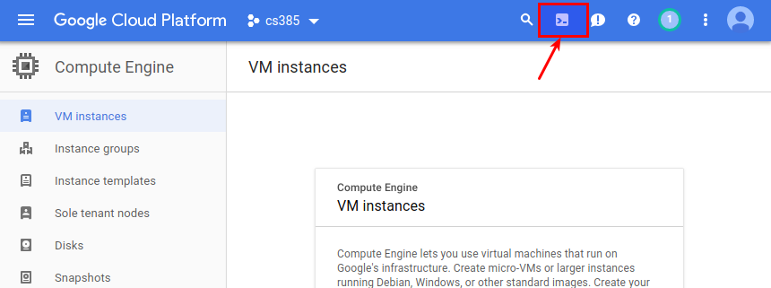

In the previous lab, you created a virtual machine and perform several installation tasks manually.
In this lab we are going to:
Google cloud provides a service called “Cloud Shell” that has several tools preconfigured to allow command-line administration of cloud services. We are going to use this tool to create a Virtual machine.
Start the cloud shell by click on the icon in the Top Icons bar.

Create a new Ubuntu 18.04 LTS micro instance with an external IP instance by executing the following command:
> gcloud compute instances create docker-01 --zone=us-west1-c --machine-type=n1-standard-1 --subnet=default --network-tier=PREMIUM --maintenance-policy=MIGRATE --scopes=https://www.googleapis.com/auth/cloud-platform --tags=http-server,https-server --image=ubuntu-1804-bionic-v20180823 --image-project=ubuntu-os-cloud --boot-disk-size=20GB --boot-disk-type=pd-standard --boot-disk-device-name=docker-01 WARNING: You have selected a disk size of under [200GB]. This may result in poor I/O performance. For more information, see: https://developers.google.com/compute/docs/disks#performance. Created [https://www.googleapis.com/compute/v1/projects/personal-211918/zones/us-west1-c/instances/docker-01]. NAME ZONE MACHINE_TYPE PREEMPTIBLE INTERNAL_IP EXTERNAL_IP STATUS docker-01 us-west1-c n1-standard-1 10.138.0.3 35.230.13.202 RUNNING
SSH into the docker-01 host, install docker and the current user to the docker user group:
> sudo apt-get install -y apt-transport-https ca-certificates curl software-properties-common > curl -fsSL https://download.docker.com/linux/ubuntu/gpg | sudo apt-key add - > sudo add-apt-repository "deb [arch=amd64] https://download.docker.com/linux/ubuntu $(lsb_release -cs) stable" > sudo apt-get update > sudo apt-get install -y docker-ce=18.06.1~ce~3-0~ubuntu > sudo usermod -aG docker $USER
Log out and log back in in order to have a shell session with the updated group membership. Once you log back in test that docker daemon is running:
> docker run hello-world
Make sure that you read an understand the output of the last command.
In this part of the lab you are going to build and deploy applications in docker containers. You need to be logged into the Virtual Machine that was created on Part 1 (docker-01) to complete the steps of this lab,
We are going to run Kafka and Zookeeper in docker containers. Create a directory called kafka in your home(~) directory, and change into it. Create a Dockerfile with the following content:
FROM openjdk:8-jre ENV KAFKA_VERSION 1.0.0 ENV KAFKA_SCALA_VERSION 2.11 ENV KAFKA_ARCH "kafka_$KAFKA_SCALA_VERSION-$KAFKA_VERSION.tgz" ENV KAFKA_HOME /opt/kafka WORKDIR /opt RUN apt-get update RUN apt-get install -y jq RUN wget -O - $(wget -qO- https://www.apache.org/dyn/closer.cgi\?as_json\=1\&path\=/kafka/$KAFKA_VERSION/$KAFKA_ARCH | jq --raw-output '.preferred')kafka/$KAFKA_VERSION/$KAFKA_ARCH | tar zxf - RUN mv /opt/kafka_$KAFKA_SCALA_VERSION-$KAFKA_VERSION $KAFKA_HOME RUN sed -i 's/zookeeper.connect=localhost:2181/zookeeper.connect=zookeeper:2181/g' /opt/kafka/config/server.properties RUN sed -i 's/broker.id=0/broker.id=-1/g' /opt/kafka/config/server.properties CMD ["/opt/kafka/bin/kafka-server-start.sh", "/opt/kafka/config/server.properties"]
Build the docker image (make sure you are in the ~/kafka directory):
> docker build -t kafka-cs385 .
Run the docker images command. Notice how you have entries for the image that was just built and for the base image:
> docker images REPOSITORY TAG IMAGE ID CREATED SIZE kafka-cs385 latest 1f3ed9b84a19 7 seconds ago 569MB openjdk 8u181-jre 66bf39162ea7 2 days ago 443MB hello-world latest 2cb0d9787c4d 8 weeks ago 1.85kB
Verfiy the image layers by using the docker history command. The output should return several lines, each one corresponds to a layer. You can see that the last layers added correspond to the build steps from the Dockerfile we just built. Compare the history of kafka-cs385 with the history of openjdk:8-jre. How many layers on top of openjdk:8-jre were added by our kafka Dockerfile? Can you find the correspondence between layers and commands in the kafka-cs385 Dockerfile? How much bigger in MB is kafka-cs385 when compared to openjdk:8-jre?
> docker history kafka-cs385
Before proceeding any further, we need to test that our image runs. To do this, we first need to create a user-defined bridge network and then start a Zookeeper server. To run zookeeper we are going to use the official Apache Zookeeper Docker Image. To run it, use this command:
> docker network create testnet > docker run -d --name zookeeper --net testnet zookeeper:3.4.11
Verify that the Zookeeper container is running by using the docker ps command
> docker ps
Now that Zookeeper is running we can start Kafka:
> docker run -d --name kafka --net testnet kafka-cs385
Verify that both Kafka and Zookeeper are running by executing the docker ps command:
> docker ps CONTAINER ID IMAGE COMMAND CREATED STATUS PORTS NAMES 6a76c10946f9 kafka-cs385 "/opt/kafka/bin/ka..." 7 seconds ago Up 6 minutes kafka c53269318237 zookeeper:3.4.11 "/docker-entrypoin..." 4 hours ago Up 4 hours 2181/tcp, 2888/tcp, 3888/tcp zookeeper
To test Kafka, we are going to log into the container. To do this, we will use the docker exec command in interactive mode:
> docker exec -it kafka bash root@6a76c10946f9:/opt#
Notice how your shell prompt changed, and it includes the container id as host name. You can now run commands that will be executed inside the container. We are going to do now several basic interactions with Kafka (refer to the Apache Kafka Quickstart First create a topic:
root@6a76c10946f9:/opt# kafka/bin/kafka-topics.sh --create --zookeeper zookeeper:2181 --replication-factor 1 --partitions 1 --topic mytopic Created topic "mytopic".
Now we use the Kafka console producer to write some messages:
root@6a76c10946f9:/opt# kafka/bin/kafka-console-producer.sh --broker-list localhost:9092 --topic mytopic
Enter several lines of text and press Ctrl+C to close the console producer. Now let’s read those messages using the console consumer:
root@6a76c10946f9:/opt# kafka/bin/kafka-console-consumer.sh --bootstrap-server localhost:9092 --topic mytopic --from-beginning
Notice how the messages that you created earlier are retrieved by the console consumer. Once all the messages are written to the terminal, press Ctrl+C to terminate the console consumer.
Exit the container (by typing the exit command as you do with a normal bash session). We now want to terminate the container by using the docker stop command:
> docker stop kafka
If you run the docker ps command, the container is not shown as running anymore. Nevertheless, the container still exists and it can be restarted. Compare the output of docker ps with the same command but using the -a option which shows all the containers. If we want to remove a container completely, then we must use the docker rm command:
> docker rm kafka
The Dockerfile that we used works, but it generates an image that is rather big in size. We can reduce the size of the image by merging several instructions together.
Edit the docker file to merge all the RUN instructions into a single instruction. How much space do you save by doing this? Build this dockerfile and tag is as kafka-cs385:consolidated_run:
> docker build -t kafka-cs385:consolidated_run .
After you successfully build this new image, run it as we did before with the kafka-cs385 image, and make sure that Kafka is working and you can create topics, produce messages and retrieve them.
We can also reduce the amount of used space by removing the cache of installation utilities. Add a command to the RUN instruction to remove the apt cache. Hint: The Dockerfile best practices reference has very valuable information that can help you. Build this image and tag it as kafka-cs385:nocache
> docker build -t kafka-cs385:nocache .
As we did before, make sure that your image works and you can interact with topics.
We can further reduce the size of our Kafka image by using a smaller base image. The OpenJDK official docker repository has many images that can be used. Typically, the slim versions are debian based images of much smaller size. Update the Dockerfile to use a slim base image. Note that you will need not only to update the base image, but you will probably need to install utilities that are no longer included in the base image and are needed to complete the installation of kafka. Build this image and tag is as kafka-cs385:slim
> docker build -t kafka-cs385:slim .
As before, make sure that your image works and you can interact with topics.
After performing the previous optimizations, you can compare the sizes of the resulting images (your image sizes might differ a little bit, but should be close to these values)
> docker images REPOSITORY TAG IMAGE ID CREATED SIZE kafka-cs385 slim 0c76aa21f306 5 minutes ago 263 MB kafka-cs385 nocache eda22e7be277 12 minutes ago 594 MB kafka-cs385 consolidated_run e9b0d0b69019 23 minutes ago 610 MB kafka-cs385 latest 0d5561696173 30 minutes ago 664 MB openjdk 8-jre 97c270c3cab0 2 weeks ago 538 MB openjdk 8-jre-slim 837969d6f968 2 weeks ago 205 MB
You can go even further by instead of using an image based on debian, you can use an alpine base image to reduce the size of the image even more. You will need to do some experimentation to figure out which utilities need to be installed to be able to install kafka, and also to run it.
> docker images REPOSITORY TAG IMAGE ID CREATED SIZE kafka-cs385 alpine 44ea7ee63d23 16 hours ago 144 MB kafka-cs385 slim 0c76aa21f306 21 hours ago 263 MB kafka-cs385 nocache eda22e7be277 21 hours ago 594 MB kafka-cs385 consolidated_run e9b0d0b69019 22 hours ago 610 MB kafka-cs385 latest 0d5561696173 22 hours ago 664 MB zookeeper 3.4.11 09fe1e7c8f0f 11 days ago 146 MB openjdk 8-jre 97c270c3cab0 2 weeks ago 538 MB openjdk 8-jre-alpine b36ec9de53a8 2 weeks ago 81.4 MB openjdk 8-jre-slim 837969d6f968 2 weeks ago 205 MB
In this section we are going to learn how to interact with Kafka programatically using the pykafka python library. We are going to create a simple app that exposes a REST API that receives messages and writes them to Kafka topics. We are then going to create another app that consumes those messages.
SSH into docker-0. Create a new directory called kafkaclient and change into it.
Create a file called app.py with the following content:
from flask import Flask, request, Response from pykafka import KafkaClient app = Flask(__name__) client = KafkaClient(zookeeper_hosts="zookeeper") # create topics topics = ['deliveries', 'updates'] for item in topics: client.topics[item] @app.route("/kafka", methods=['POST']) def write_message(): payload = request.get_json() req_topic = payload['topic'].encode('utf-8') req_message = payload['message'].encode('utf-8') if req_topic in client.topics: topic = client.topics[req_topic] with topic.get_sync_producer(max_queued_messages=0, linger_ms=0) as producer: producer.produce(req_message) return Response(response='{"msg": "Success"}', status=200, mimetype="application/json") else: return Response(response='{"msg": "Invalid Topic"}', status=400, mimetype="application/json")
Create a file called requirements.txt with the following content:
Flask==0.12.2 pykafka==2.6.0
Create a Dockerfile with the following contents:
FROM python:2.7-alpine3.6 COPY * /opt/kafkaclient/ WORKDIR /opt/kafkaclient RUN apk add --no-cache g++ \ && pip install -r requirements.txt ENV FLASK_APP app.py CMD ["flask", "run", "--host=0.0.0.0", "--port=5000"]
Once all these files have been created, the directory tree of kafkaclient should look like this:
kafkaclient ├── app.py ├── Dockerfile └── requirements.txt
Build the image:
> docker build -t kafkaclient .
Start Zookeeper and Kafka using the same instructions from the previous section (Use the most optimized Kafka image available)
Start a kafkaclient container that exposes the container’s port 5000 in the host’s port 80:
> docker run --rm -d -p 80:5000 --name kafkaclient --net testnet kafkaclient
The application has two hard-coded topics (“deliveries” and “updates”), and only writes messages to those topics. To write a message, we will use the POST /kafka REST API endpoint. On another terminal, in your workstation (i.e. without logging into docker-0) execute the following command (replace DOCKER-01_EXTERNAL_IP_ADDRESS with the corresponding value)
> curl -X POST -H 'Content-type: application/json' http://<DOCKER-01_EXTERNAL_IP_ADDRESS>/kafka -d '{"topic": "deliveries", "message": "Chuck Norris just delivered you a roundhouse kick."}'
Try writing different messages and writing to topics that are not deliveries or updates.
Back into a session where you are logged into docker-01, log into the kafka container and start a console consumer for the “deliveries” topic (we used the kafka-console-consumer back in the Building a Dockerfile: Apache Kafka section). Write some messages to the deliveries topic using the POST /kafka REST API and notice the effect on the console consumer.
In this section you are going to work on your own. The objective is to deploy the minibank application in docker. You need to follow these guidelines:
minibank that will build the minibank docker image. To compile minibank, you need to use the procedure explained in https://github.com/docker-library/docs/tree/master/golang#compile-your-app-inside-the-docker-container. (See note below about the system where this will be tested)mysql that will build the mysql imagerun-images that will start the minibank and the mysql containers.A link to a public Github repository that will contain:
Your submission will be tested in an Ubuntu 18.04 System that will not have the golang binaries installed. If your make targets require to have a golang installation, they will not work. The only software that you are guaranteed to be installed on that system are docker, make, git and curl/wget. If there is another tool that is required to build/run your submission, make sure you ask or at least document it.
The minibank source code for this assignment is available at https://github.com/jcabmora/minibank/tree/week1/week1